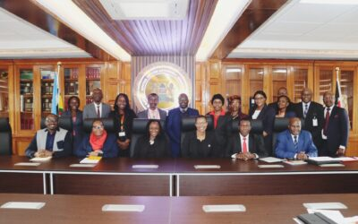

Strengthening Justice and Human Rights: KNCHR Engages Office of the Attorney General

Introduction
In a significant step towards reinforcing human rights protection and enhancing the rule of law in Kenya, the Kenya National Commission on Human Rights (KNCHR) led by Vice Chairperson Dr. Raymond Nyeris and Commissioner Dr. Dennis Wamalwa, paid a courtesy visit to the Office of the Attorney General, Hon. Dorcas A. Oduor, SC, OGW, EBS. The meeting underscored KNCHR's commitment to inter-agency collaboration in promoting justice, institutional accountability, and legal reform.
A Strategic Partnership for Accountability and Human Rights
The visit facilitated meaningful dialogue on how the KNCHR and the Office of the Attorney General can strengthen their collaboration to ensure human rights are upheld across all levels of governance. Central to the discussions was the recognition that human rights protection requires collective responsibility across institutions, driven by legal compliance, timely policy implementation, and adequate resourcing.
Your content goes here. Edit or remove this text inline or in the module Content settings. You can also style every aspect of this content in the module Design settings and even apply custom CSS to this text in the module Advanced settings.
Commissioner Wamalwa During AG Meeting
Key Areas of Discussion and Advocacy
1. Legislative Alignment and Institutional Strengthening
The KNCHR reiterated the need for swift enactment of amendments to the KNCHR Act (Cap. 71) to ensure compliance with the United Nations Paris Principles. This is vital to safeguard the Commission’s “A” status accreditation from the Sub-Committee on Accreditation, which reflects its independence and legitimacy as a national human rights institution.
In addition, KNCHR emphasized the importance of securing adequate resources for the full implementation of its expanded mandate, especially under the Prevention of Torture Act. It also highlighted the need for the enactment of operational regulations to guide its complaints-handling mechanisms.
2. Policy Implementation and Review
Both parties acknowledged the critical role of the National Policy and Action Plan on Human Rights (Sessional Paper No. 3 of 2014). KNCHR urged the Office of the Attorney General to expedite the ongoing review of the policy, aiming for its completion before Kenya's Universal Periodic Review in May 2025.
Commissioner Wamalwa During AG Meeting
3. National and International Compliance Mechanisms
The Commission called for enhanced support to the National Committee on International and Regional Human Rights Obligations. This multi-agency mechanism, under the Attorney General’s leadership, is essential for coordinating Kenya’s reporting obligations and engagements with international human rights bodies.
Additionally, the Commission requested prioritization of the National Reporting and Tracking Database (NRTD) to close data gaps across government institutions.
4. Inclusion and Protection of Marginalized Groups
The visit also focused on advancing the rights of intersex persons. The Commission recommended prioritizing the legislative process to enact the Intersex Bill developed by the Intersex Persons Implementation Coordination Committee (IPICC), whose term expired in August 2024.
Furthermore, the adoption and implementation of the Kenya National Action Plan on Albinism (2023–2028) was discussed, alongside the National Reparations Policy for victims of historical injustices.
5. Justice Delivery and Legal Accountability
A matter of serious concern was the non-compliance with court orders and the delayed implementation of judicial decisions. KNCHR called on the Office of the Attorney General to audit pending judgments and spearhead measures to ensure adherence, including the proposal for a robust and effective Contempt of Court law.
The Commission also advocated for action on the judgments issued by regional courts, especially the African Court on Human and Peoples’ Rights in the Ogiek case, which remains unimplemented despite the court's directives.
6. Death Penalty and International Commitments
KNCHR urged the Office of the Attorney General to initiate legislative reforms to abolish the death penalty, aligning with recommendations from national and international human rights bodies. The Commission also encouraged Kenya to ratify the Second Optional Protocol to the International Covenant on Civil and Political Rights.
In addition, the Commission highlighted Kenya’s delay in ratifying the International Convention for the Protection of All Persons from Enforced Disappearance, despite having signed it in 2007. It recommended that the Attorney General’s office spearhead this ratification and advise acceptance of pending invitations from relevant UN Special Rapporteurs.
Commissioner Wamalwa Having Light Moments With AG
Way Forward
The engagement signaled renewed dedication from both the KNCHR and the Office of the Attorney General to work collaboratively in upholding human rights and strengthening democratic governance in Kenya. It emphasized the necessity of timely legislative reforms, inclusive policies, and unwavering respect for court decisions.
By reinforcing institutional partnerships, the KNCHR remains committed to safeguarding fundamental freedoms and ensuring justice reaches all citizens, especially marginalized and vulnerable populations.
Conclusion
The KNCHR extends its sincere appreciation to Hon. Dorcas A. Oduor and her office for the valuable dialogue and shared vision. The Commission looks forward to deeper cooperation in promoting a more just, inclusive, and accountable society in Kenya.